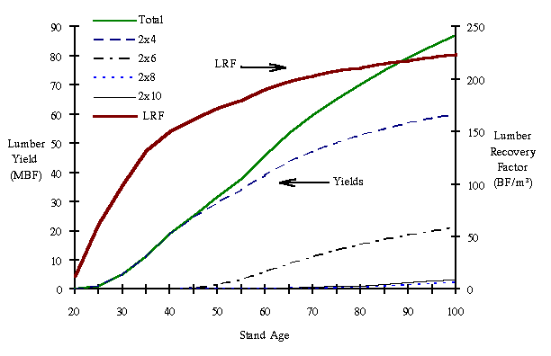
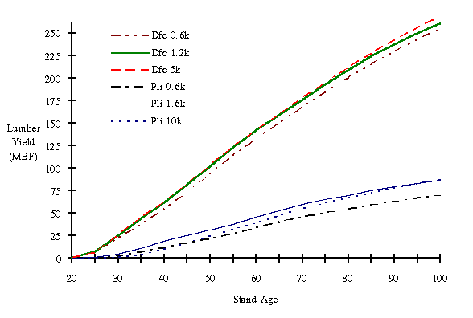
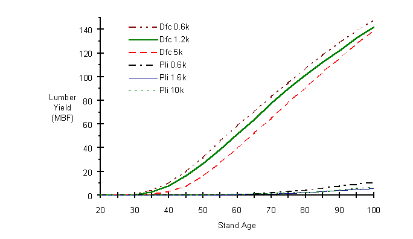

In this Topic Hide
TASS's log bucking and sawmill simulators work together to find cutting solutions that optimize lumber value (using #2 grade prices) within a mix of four standard 2x lumber dimensions, i.e., 2x4, 2x6, 2x8, and 2x10 (1x for red alder).
Figure 3-1 below shows an example of TIPSY's estimated lumber yields and lumber recovery factor (LRF) at each age for a site index 18 lodgepole pine stand. By age 25, one MBF of 2x4 lumber can be produced by the stand, however the larger dimensions can't be recovered until much later (i.e. age 50 for 2x6 and age 70 for 2x8 and 2x10). The stand's LRF increases continuously over the ages shown but at a decreasing rate. Between age 60 and 100 the LRF increases by only 18%, from 190 BF/m³ to 224 BF/m³.

FIGURE 3-1. Lumber yields by dimension (lodgepole pine, SI 18, initial density 1,600 SPH).
Figure 3-2 below illustrates how species, site index and initial density affects a stand's total lumber yield and Figure 3-3 shows the yield of larger dimension lumber (2x8 and 2x10) for the same stands. The two diagrams illustrate the trade off between volume maximization and value maximization inherent in the choice of initial densities. For both species the two higher initial densities resulted in higher total lumber yields than did the lowest initial density but the higher initial densities also had lower yields of the larger dimension lumber which tend to command a price premium over the smaller dimension lumber.

FIGURE 3-2. Lumber yields

FIGURE 3-3. Lumber yields of large dimension lumber (2 X 8 & 2 X 10).
TASS's current sawmill simulator does not grade its lumber output. Instead, TASS estimates lumber grades for all conifer species based on log grades using the following table.
Lumber grade |
Lumber grade (%) by Log grade |
|||
C&H |
I&J |
U&X |
Y (adj.) |
|
SS |
47.50 |
32.80 |
13.00 |
0.00 |
#1 |
19.85 |
27.65 |
37.50 |
15.00 |
#2 |
17.90 |
22.25 |
25.90 |
45.00 |
#3 |
8.75 |
10.20 |
13.70 |
25.00 |
#4 |
6.00 |
7.10 |
9.90 |
15.00 |
|
100.00 |
100.00 |
100.00 |
100.00 |
This table was derived from lumber-recovery research on coastal Douglas-fir (i.e., figure 3.4 below, Kellogg, 1989). Data from interior lodgepole pine (Middleton et al., 1995) and coastal western hemlock (Middleton & Munro, 2001) show similar trends. This is not unexpected since log and lumber grading rules for individual conifer species are based on similar knot-size to piece-size relationships. Consequently, the coastal Douglas-fir table above serves as TASS's surrogate for all conifers, until better information becomes available.
FIGURE 3-4. Relative proportions (%) of five lumber grades obtained from four log grades.
Previous versions of TIPSY did not provide estimates for individual grades. Instead, lumber was collectively reported as #2 & Better. This assumption was supported by Table 3-1 below, which presents the results of four sawmilling studies undertaken to determine lumber grade yields in British Columbia and the US Pacific Northwest.
Table 3-1. Lumber grade recoveries from selected sawmilling studies
______________________________________________ |
Study |
Select Structural |
No. 1 |
No. 2 |
No. 3 |
Econ. |
Reject |
______________________________________________ |
|
(Percent of total lumber yield) |
Lodgepole Pine (Middleton et al., 1995) |
|
|
700 SPH |
45.6 |
23.8 |
24.5 |
3.9 |
1.0 |
1.3 |
1100 SPH |
62.5 |
5.6 |
29.8 |
2.1 |
- |
- |
1900 SPH |
65.4 |
5.8 |
27.4 |
1.3 |
- |
- |
|
|
|
|
|
|
|
Coastal Douglas-Fir (Willits and Fahey, 1988) |
|
|
|
21.0 |
27.0 |
38.0 |
10.0 |
4.0 |
- |
|
|
|
|
|
|
|
Second Growth Douglas-fir (Fahey and Martin, 1974) |
|
|
38.4 |
36.9 |
15.9 |
8.12 |
0.7 |
- |
|
|
|
|
|
|
|
Second Growth Douglas-fir (Middleton and Munro, 1989) |
|
|
35.3 |
26.6 |
21.3 |
9.9 |
6.9 |
- |
_____________________________________________ |